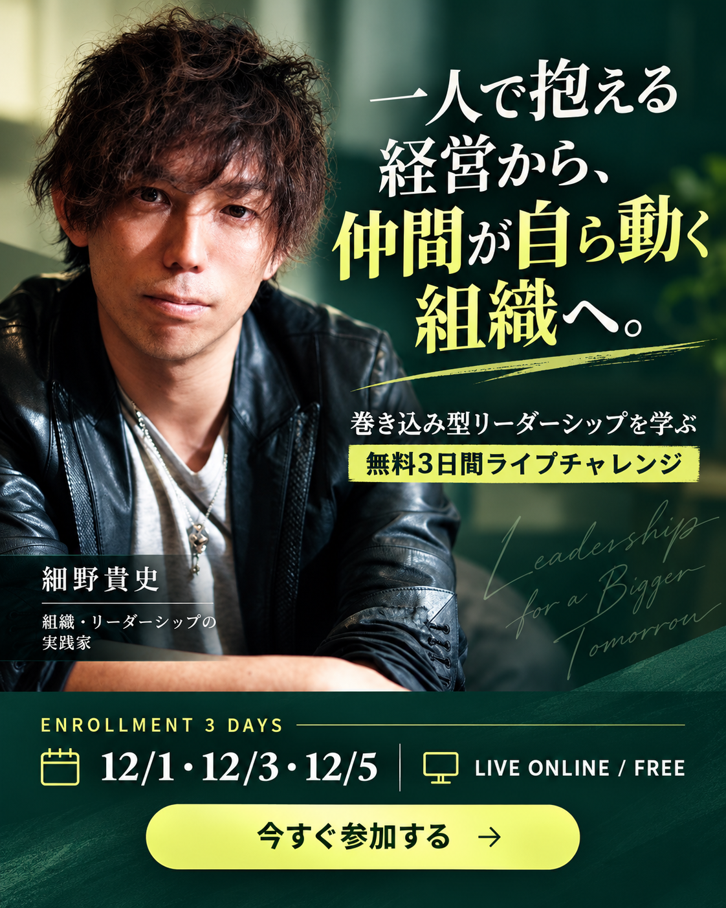

7つの質問に答える
判断や実行が誰に集まっているか、仲間が自ら動けているかを整理します。
ENROLLMENT｜3 MINUTE SELF CHECK
「もっと仲間が自走してくれたら」――そんな組織づくりの現在地を、7つの質問で整理する3分診断です。

TAKASHI HOSONO / ENROLLMENTHOW IT WORKS
判断や実行が誰に集まっているか、仲間が自ら動けているかを整理します。
いま必要な「巻き込み」の視点と、次に向き合うテーマを受け取ります。
診断結果をもとに、仲間と事業を前に進めるEnrollment無料3日間をご案内します。
START DIAGNOSIS
正解・不正解を決める診断ではありません。いまのチームづくりを見つめ、次の一歩を考えるためのセルフチェックです。
※医療・心理の診断ではありません。回答内容は外部へ送信されません。
LECTURER
17店舗
約400名
系列を含む17店舗、約400名の組織を率いる現場の実践者。
美容院事業、美容コンサルティング、ビジネスコンサルティングを展開。
診断結果の先にある「仲間が当事者として動く組織」を、現場で実践してきた経験から3日間で届けます。